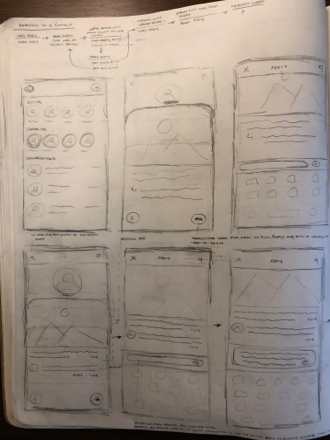
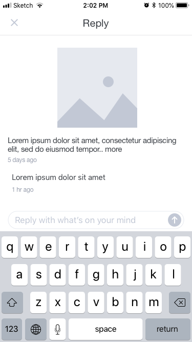

Overview
Chance is a mobile dating application concept that I created out of sheer fascination for how technology influences the way we communicate and build relationships with one another. Where you go, what you do, and what you think about throughout your day can naturally define your persona to the people around you. With Chance, you can capture these moments and share them to meet people whose interests and values align with yours. You never know how perfect someone can be until you give them a chance. You can view the finished product here.
Research
To create a concept for a mobile dating application that would successfully facilitate genuine relationships between users, I needed to grasp what currently fosters and hinders genuine connections between users of mobile dating applications. Understanding a problem is synonymous with knowing how to solve it. Therefore, I wanted to see users’ problems as they are, not as how I assumed them to be.
Research Questions
To solidify what I wanted to learn from my research, I formed the following questions:
- RQ1 - In what ways do mobile dating applications fail to build genuine relationships between users?
- RQ2 - What personal information do people find to be most valuable when deciding whether to initiate a dating relationship with someone?
Survey
Next, I created an online survey that addressed the research questions above. To ensure that the survey questions were straightforward and unbiased, I piloted the survey and refined the questions accordingly. Moreover, to help boost response rates and increase the likelihood of honest responses, I made the survey anonymous.
Unpacking The Results
After receiving over 50 responses, I began to analyze the data using an affinity diagram.
Several packs of sticky notes later, I ended up with the following key findings:
RQ1
- People’s digital identities are a skewed portrayal of who they are in person
- On dating apps, users frequently promote an identity that is a falsified or curated version of who they are in real life. Users open themselves up to users who, when met in person, may not live up to their digital identity. Users are forced to be skeptical that users are who they say they are.
- “You open yourself up to creepy guys and really horrible dates if people aren’t being truthful” - P11
- People prefer to interact with one another in person, but connections on dating apps typically remain digital
- When matched, users merely gain access to send each other messages. They can interact digitally, but aren’t presented with features that facilitate meeting up in person. The burden of planning to meet up in person falls completely on users.
- “I have basically zero expectations of ever physically meeting up with someone” - P26
- Users are treated as options, rather than real people
- The ease of access to a bottomless pool of users promotes a culture of instant gratification and downplays the value of matches. There is always a new user to swipe on and thus a lack interest in valuing and investing in matches. Interactions typically remain at a surface level creating more grounds for making unwelcome sexual advances and ghosting users.
- “Once you get a match, there’s no incentive to actually see the person behind it, because in my experience it’s a numbers game” - P51
- Users are discouraged from expressing their authentic selves
- Dating apps encourage users to make connections based on appearance alone. They support superficial interactions, prompting users to gravitate towards stereotypes and make snap judgements about one another. As a result, users are reluctant to fully express themselves because they are worried they will be disadvantaged for being who they actually are.
- “I always felt like I might lose connections once I revealed my height. I thought once about adding it to my bio, but then I thought I might get no matches” - P6
RQ2
The survey results revealed that the five most important pieces of information to users are as follows:
- Appearance - 76.5%
- Gender - 70.6%
- Values - 61.8%
- Age - 52.9%
- Hobbies - 50%
Target User
Using the results from the affinity diagram, alongside various appstore reviews of the most popular dating apps, I created a user persona and empathy map to capture the behaviors, goals, and frustrations of the user group I would be designing for: those who are looking to form a dating relationship with someone.
Persona
Nancy
Is a 22-year-old graduate student at University of Washington who recently moved to Seattle.
- Behaviors
- Uses dating apps in an attempt to meet new people
- Prefers to connect with people in person, rather than digitally
- Frequently sketches in her notebook
- Tends to be shy when initially meeting someone
- Routinely goes hiking
- Frustrations
- Never really knows who they are actually talking to and has been misled several times
- Conversations with matches tend to stagnate and rarely lead to in person interactions
- Does not feel valued by the people with whom they interact
- Matching algorithms are superficial hindering their ability to deeply connect with matches
- Feels pressured to present a “perfect” self portrayal
- Goals
- Has reassurance that person to whom Nancy is talking is who they actually say they are
- Digital interactions with matches foster meeting up in person
- Interactions with matches are not surface level interactions
- Expresses their true identity without fear of being ridiculed
- Forms a genuine relationship with someone
Empathy Map
Nancy
Solution Criteria
After leaving my perspective to temporarily take on the target user’s, I now had an understanding of who I was designing for and how I should design for them. To hold myself accountable for accurately transferring this understanding into a dating app that would meet the target user’s needs, I drafted a solution criteria. The list is as follows:
- Promotes genuine interactions
- Provides reassurance that users are who they say they are
- Facilitates meeting up in person
- Encourages users to express who they are, not who others want them to be
- Sets users up to be treated as people, not options
Design
With an understanding of the target user and the current issues they face on dating apps, I began brainstorming solutions.
After filtering my ideas down to the ones that aligned well with my solution criteria, I began to sketch out flows and screens for each concept.



Confident in my flows, I wireframed my sketches to further visualize my ideas and iterate upon the prioritization and placement of the design elements that tied each idea together. A handful of wireframes are presented below.

With a strong grasp on the overall concept, I transformed each wireframe into a high fidelity mockups. On Chance, each user has a board whose collection of posts genuinely showcases their interests and values. To encourage users to confidently express themselves as well as provide reassurance that users are who they say they are, posts must be created on the spot and aren’t editable.
Posting a Photo
To give other users a glimpse of their daily shenanigans, users can add a captioned photo to their board.
Posting a Video
Users can further communicate parts of their personality by adding a captioned video to their board.
Posting a Note
Moreover, users can highlight their values by posting responses to system generated prompts to their board.
Deleting a Post
To ensure that users’ content reflects their current selves, posts will be deleted by the system after a year. Users can manually delete their posts at anytime though.
Settings
Uses can control how their board is being shared with others by specifying their preferences in Settings.
Commenting
Each day a user receives a set of users who have been curated based on how similar their boards’ content is to the users’. The user can get a better understanding of their shared interests and values by walking through the board of each user. To signify that they’re interested in a user, the user can comment on a post in the user’s board that stands out to them.
Viewing the Comment
When a user comments on a user’s post, that user whose will be notified. The user can then view the comment as well as view the board of the user who commented on their post.
Replying to the Comment
To signify their interest, the user can reply to the comment. Doing so will transform the thread into a conversation, giving the two users the ability to freely message one another and build off of their initial interaction.
Meeting up
Within the conversation, users will have access to a list of popular meetup spots. With minimal effort, users can suggest a spot to meet face to face and thus can get to know one another in person rather than digitally.
Conclusion
A platform driven by user activity poses the risk of users misrepresenting themselves and deceiving others. Therefore, a challenge I faced during this project was creating an application that would encourage users to post genuine content, rather than present themselves as someone they aren’t. If I were to take this project further, I’d put my designs in front of real people to test the user experience. There’s a saying that in theory, theory and practice are the same. In practice, they are not. Thus, through testing I would hope to evaluate how well my designs address users’ paint points in practice, rather than merely in theory.